Guide
How First Flow works
Start in one tap
First Flow opens on Home. It greets you by the time of day, shows the pose of the day in its arch, and asks how long you have. Pick a length, pick a pace, and press Begin.
- 5 min and 10 min
- A new mix of standing, floor and seated poses each time.
- Full flow
- All 20 poses in order, about 20 minutes.
- Steady
- 4 in and 4 out.
- Slow
- 5 in and 5 out.
- Calm
- 4 in and 6 out, a longer out breath to settle you.
Tap the pose of the day to read about it.
Four sections in the bar
The bar at the foot of the screen has Home, Poses, Science and Settings. Tap one to go there, or tap the one you are on to go back to its top. The three dots at the top right open More, with Add the widget.
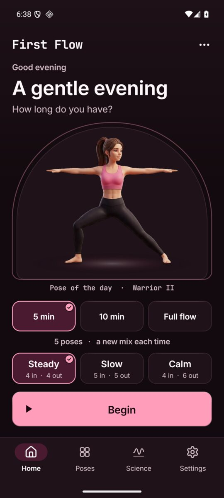
The flow
Each pose starts with a short Get ready time to move into it (5, 7 or 10 seconds, set in Settings), then you hold it for a few slow breaths. The breath ring fills as you breathe in and empties as you breathe out, and its number counts the seconds left in this breath. The words say Breathe in or Breathe out, and which breath of the hold you are on.
Poses that work one side at a time give each side its turn: Hold, first side, then Switch sides, then the second side. Near the end of a pose you see what is up next.
- Pause and play
- The big round key in the middle.
- Previous and next
- The keys on each side go back a pose or skip ahead.
- End the flow
- The cross at the top left.
The screen stays on while the flow runs. A call or another app playing sound pauses it, and so does pulling out headphones; press play when you are ready.
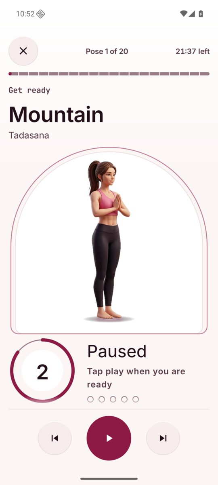
Well done
At the end you see how many poses, minutes and breaths you gave yourself. After a short flow, Another mix starts a fresh one; after the full flow, Flow again starts over.
On a phone, First Flow may ask once: Shall I remind you tomorrow? Pick Morning, Midday, Evening or another time and tap Yes, remind me, or Not now. After two Not now it never asks again.
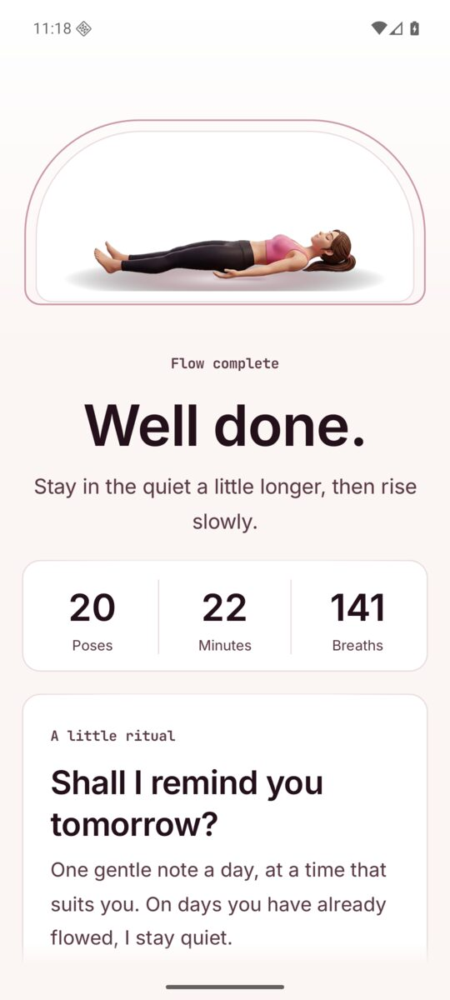
Poses
Poses lists all 20 in the order you flow them: Mountain, Tree, Chair, Standing Forward Fold, Warrior I, Warrior II, Triangle, Low Lunge, Plank, Downward Facing Dog, Cobra, Cat, Cow, Child's Pose, Easy Seat, Butterfly, Seated Forward Fold, Bridge, Knees to Chest and Corpse Pose.
Tap a pose to open its page: its Sanskrit name, how long you hold it, three short How to steps in plain words, and an easier option, so you can go at your own pace. Start the flow here begins the flow from that pose. Previous and next take you to the poses around it.
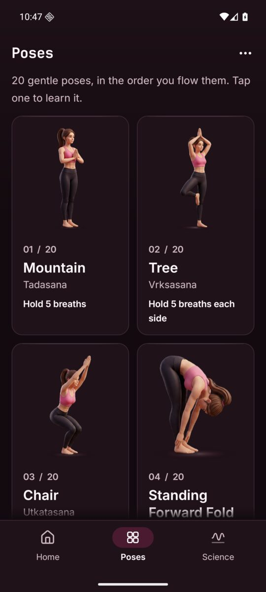
Science
Science has four short pages, one finding each, with a clear chart: slow breathing at 10 or fewer breaths a minute, heart and breath at 6 a minute, the long out breath, and a little every day. The charts mark the pace you chose. Turn the pages with Previous and Next, or swipe.
First Flow is a gentle practice, not a treatment. Stop if anything hurts, and ask a doctor if you are unsure.
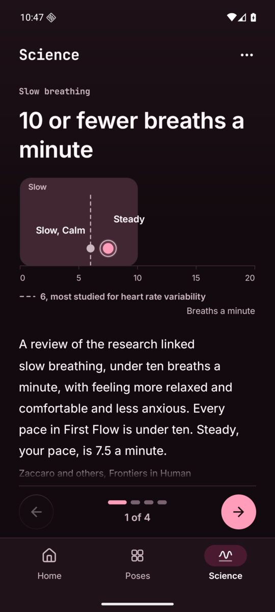
The widget
The home screen widget shows the pose of the day and begins your flow in one tap. It grows with its size, from a slim bar to the pose large with its Sanskrit name. Add it from More, Add the widget, or touch and hold your home screen, pick Widgets, then First Flow.
The daily reminder
Off until you turn it on, from the done screen or in Settings, Daily reminder. One gentle note a day at the time you choose, and none on days you have already flowed. On Android 13 and newer, Android asks for notifications only after you say yes.
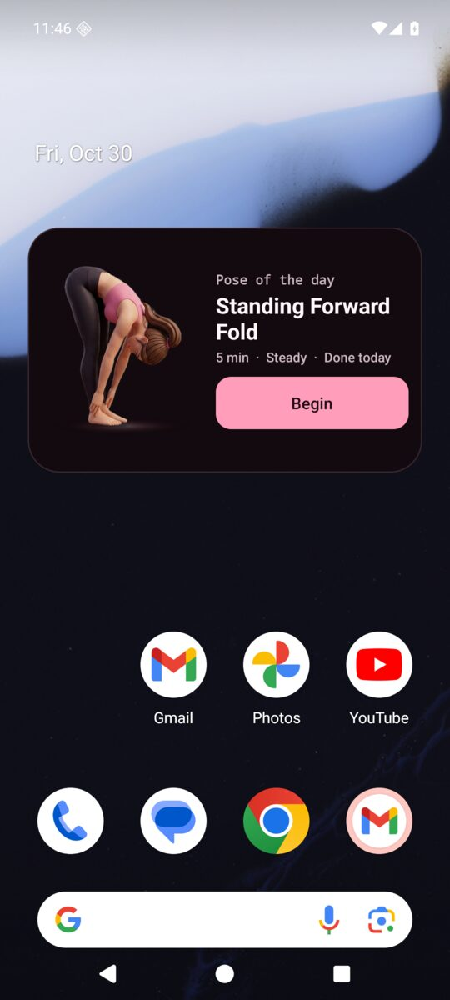
Settings
Settings is the last item in the bar: cards of rows, each saying what is set now. A row opens its own small page; Back takes you to the hub where you left it.
- Look
- Follow the phone (Blush by day, Dusk at night), Blush (warm white paper with deep rose), Dusk (deep plum, nearly black, with rose), or Black (true black for OLED, with rose).
- Language
- Pick the language of First Flow, or follow the phone. The page lists every language the app has words for, each named in itself. Pose names and cues follow your pick, and the voice guide stays in English.
- Breath pace
- Steady, Slow or Calm. Every pace is under ten breaths a minute, the slow breathing the research studies.
- Get ready time
- 5, 7 or 10 seconds before each pose to find your shape.
- Sound
- Singing bowls, a soft ring at each new step; the Voice guide, a warm voice that reads each pose and its cues; and under the flow Calm music, a Singing bowl bath, or Silence.
- Daily reminder
- A gentle note each day, and its time.
- Privacy
- The promises as red ban chips, the two permissions and why, where your practice is kept, and the privacy policy in full.
- Help
- This guide, the report page and the privacy policy.
- About
- The version. Every pose, voice clip and track ships inside the app, so nothing is ever fetched or sent.
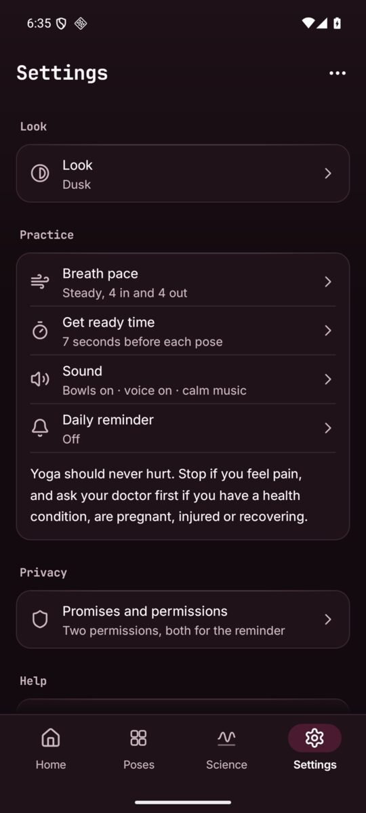
Sound
Soft singing bowls mark each step, never each breath. The voice guide is a warm recorded voice, not the phone's robot voice, and it never says the same line twice in a row. Music ducks while the voice speaks. Every sound ships inside the app.
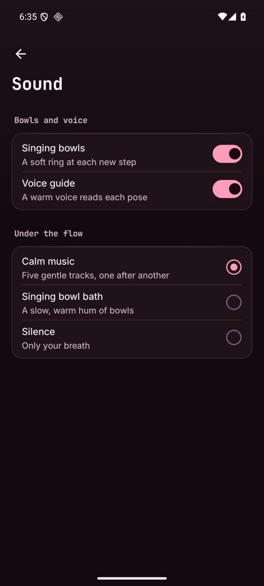
On Android TV and Google TV
First Flow runs on Android TV and Google TV too: start with one press, pause and move through the flow with the remote, and scan links with your phone.
- The side rail
- Home, Poses, Science and Settings sit in a rail on the left instead of the bar.
- Begin in focus
- Home opens with Begin in focus, so OK starts the flow. A ring of light shows where you are.
- The flow on the remote
- OK pauses, Back ends the flow. The remote's media keys work from anywhere in the flow: play and pause, next or fast forward for the next pose, previous or rewind for the one before.
- Open on your phone
- A TV has no browser, so links in Settings (this guide, the report page, the privacy policy) end in a QR tag and open a QR code. Point your phone's camera at it to open the page there.
- Not on a TV
- The daily reminder, the widget and More. Dusk is where a TV starts; Follow the phone reads Follow the TV.
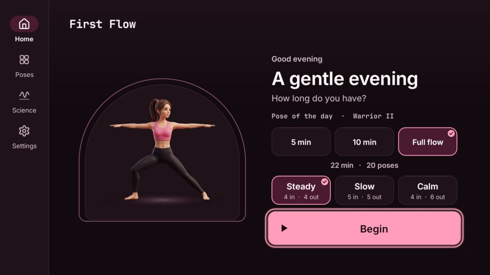
Home on a TVBegin is in focus. 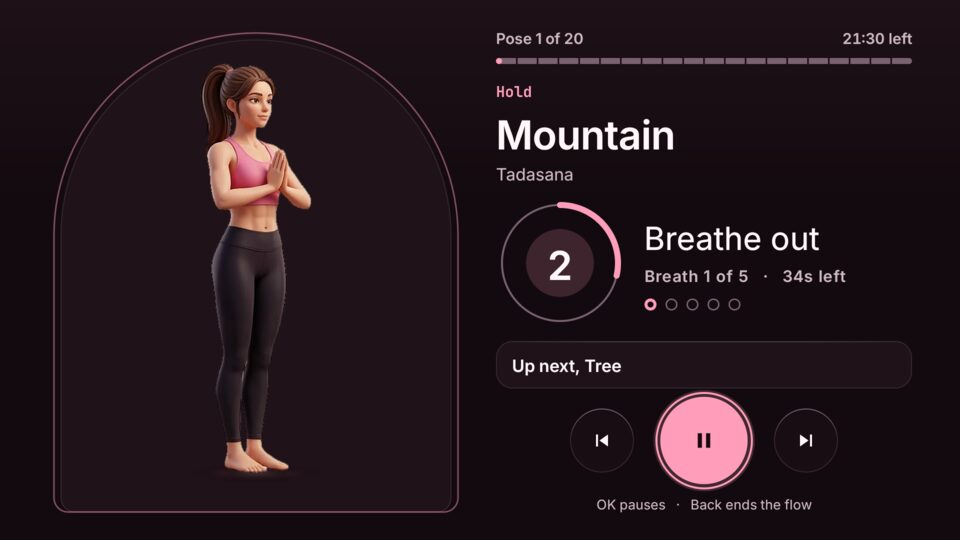
The flowOK pauses, Back ends. 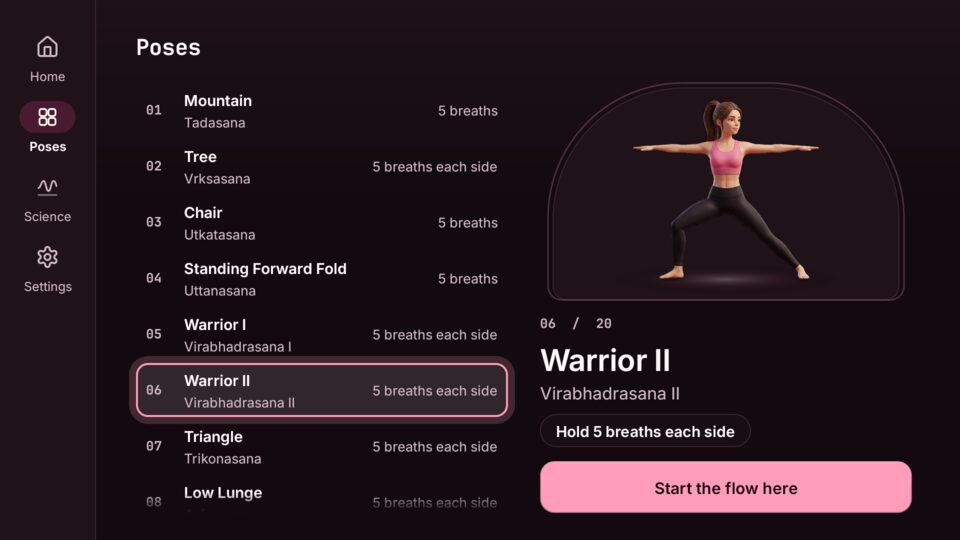
PosesA list beside a preview. 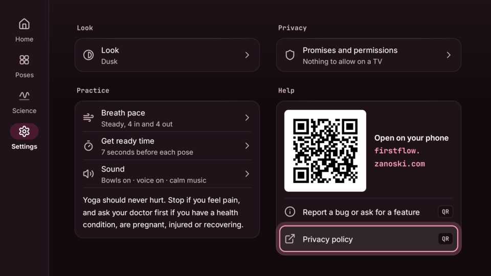
SettingsLinks open as QR codes.
Privacy
No ads, no tracking, no analytics, no crash reports, no account, no AI and no internet. First Flow does not even ask for internet access, so Android does not let it reach the network. It asks for two things, both for the reminder: notifications, only after you say yes to it, and running at start up, to set the reminder again after a restart or an update. Your look, pace, sounds and reminder time stay in the app's own storage on your phone. See the privacy policy.
Accessibility
First Flow works with TalkBack and large text. Every figure has a spoken description, and the flow says each step aloud; the voice guide stays quiet while TalkBack runs, so you never hear two voices. Touch targets are at least 48 dp, words keep a 7 to 1 contrast, and with Android's animations off the breathing art keeps still.
Go easy
Yoga should never hurt. Stop if you feel pain, and ask your doctor first if you have a health condition, are pregnant, injured or recovering. First Flow is not a medical device and does not diagnose, treat, cure, or prevent any medical condition.
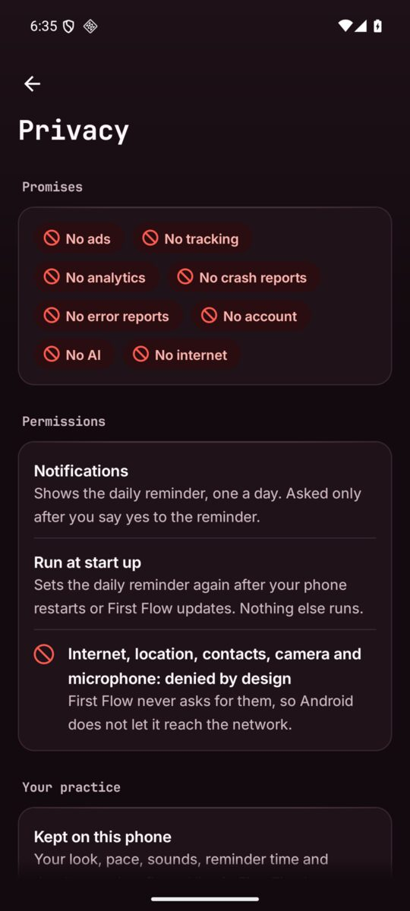